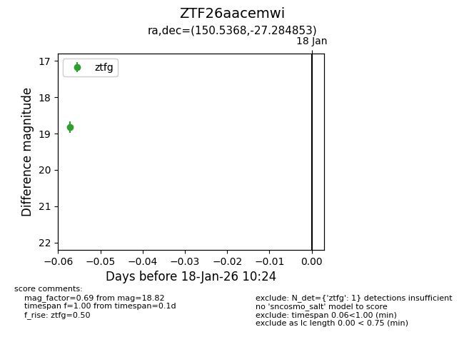
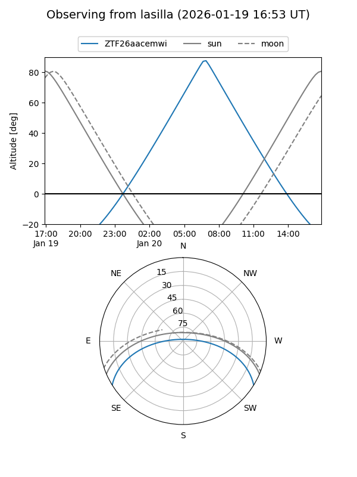
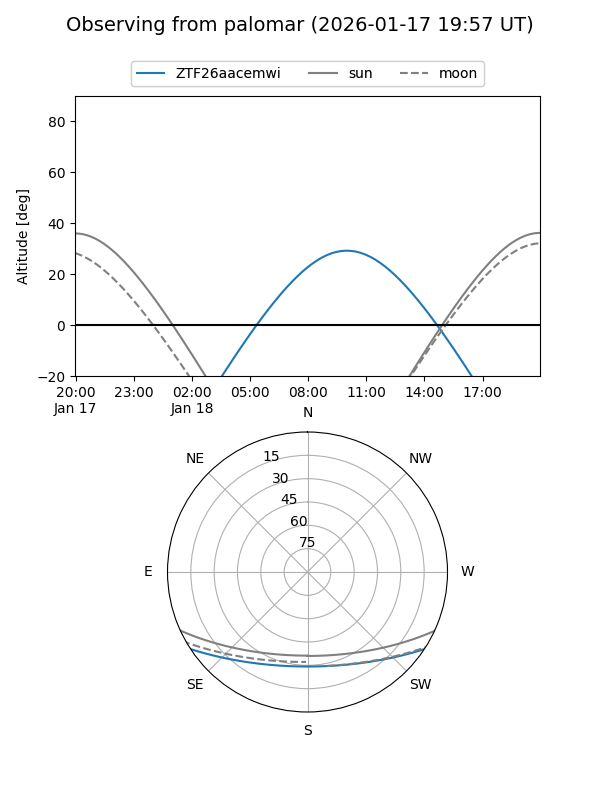

ZTF26aacemwi
Target ZTF26aacemwi at 2026-01-20 10:26
Aliases and brokers:
FINK: link
Lasair: link
ALeRCE: link
alt names
ZTF26aacemwi (ztf,fink_ztf)
Coordinates:
equatorial (ra, dec) = 150.5368,-27.28485
equatorial (HMS+DMS) = 10:02:08.84,-27:17:05.47
galactic (l, b) = (262.7124,+22.07273)
Flags:
Photometry:
last ztfg=18.82
1 ztfg detections
Lightcurve

Visibility


Additional plots